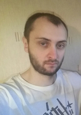

Personal Information
Name: Yauheni (Евгений)
Surname: Matveyenak (Матвеёнок)
Date of Birth: 21.12.1990
Town: Minsk
Summary
I consider myself as a responsible, hardworking and open-minded person. I always try
to improve my skills and analyze mistakes. I am able to adapt effectively to challenging
situations and remain calm in stressful moments. I enjoy working as a team member and
always try to find a common language with people. My key priorities are quality, punctuality
and responsible approach to work.
For me programming, especially Front-end, is something
truly exciting and motivating. It allows us to create something out of nothing. IT has become
one of the most progressive industries in the world and to be part of it is something that
really motivates me. I am ready to put in the time, dedication and commitment to succeed and
achieve my goals.